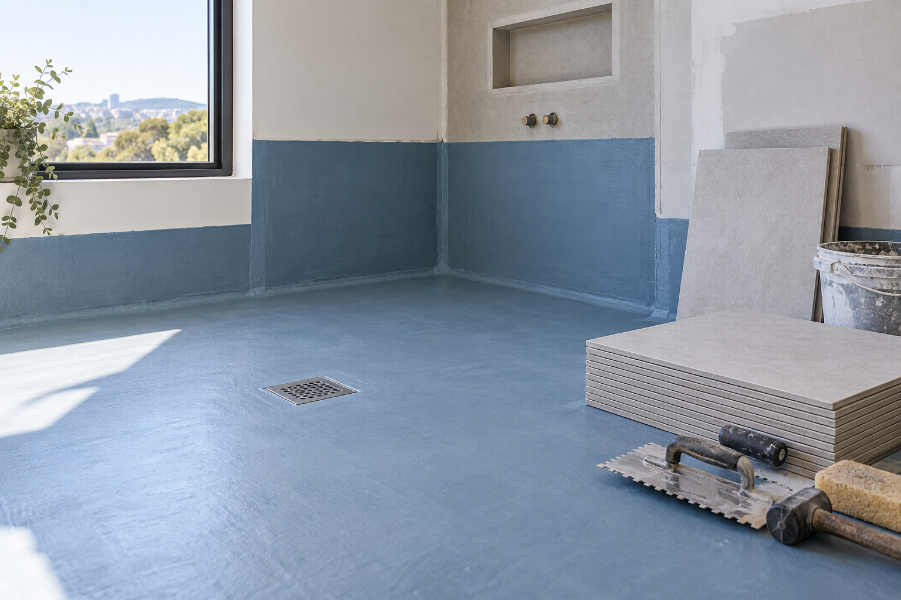
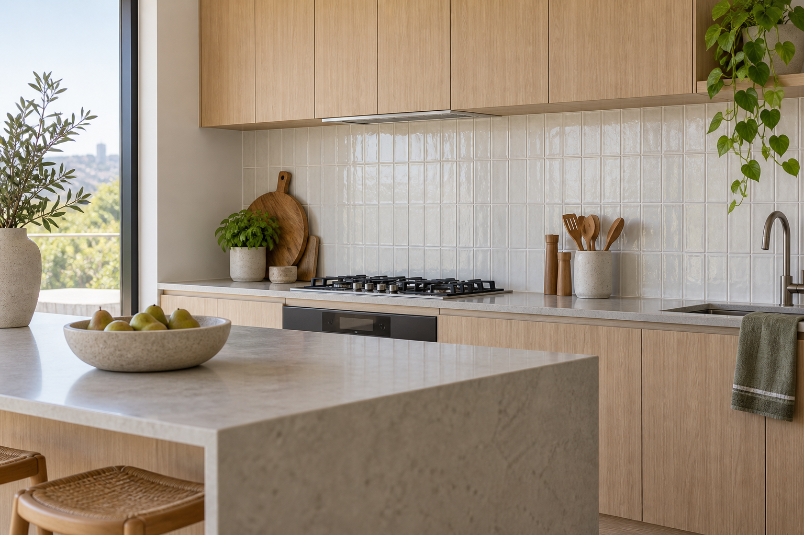

Roof waterproofing
Roof surfaces, junctions, penetrations and other locations where water entry is a concern.
View service details →Our services
We provide waterproofing and tiling services for Adelaide properties. Choose the service that matches the work you need, then send an enquiry.
CALL 0425 170 688Service category one
We provide waterproofing services for bathrooms, laundries, balconies, roofs, kitchens, pools and external surfaces.

Roof surfaces, junctions, penetrations and other locations where water entry is a concern.
View service details →Bathroom wet areas before tile and finished surfaces are installed.
View service details →Kitchen areas where the surface and moisture exposure need to be considered.
View service details →Balcony surfaces, edges, corners and drainage-related areas.
Read balcony waterproofing details →Laundry floors, wall junctions and other wet-area surfaces.
Read laundry waterproofing details →Pool-related surfaces and surrounding areas requiring moisture protection.
View service details →External wall junctions, house edges, corners and exposed connection points.
View service details →Other damp-prone spaces. Include the area and visible condition in your enquiry.
View service details →Service category two
We provide tiling services for bathrooms, kitchens, balconies, rooms, courtyards and walls.

Bathroom wall and floor tiling for wet-area renovations, shower spaces and finished bathroom surfaces.
We provide tile installation for the bathroom scope, including the wall or floor areas identified in your enquiry.
Enquire about bathroom tiling →Kitchen tiling for splashbacks, feature walls and selected kitchen floor or wall surfaces.
Tell us the wall or floor area, the tile finish and whether cabinetry or appliances are already in place.
Enquire about kitchen tiling →Balcony tiling for exterior surfaces, edges and connections around the balcony area.
Include the balcony surface, current condition and intended finish in your enquiry.
Enquire about balcony tiling →Wall and floor tiling for internal rooms with a planned tiled finish.
Share the room, surface area and tile finish required so we can respond about the service.
Enquire about room tiling →Courtyard and outdoor-living tiling for exterior floor surfaces and finished outdoor areas.
Include the surface condition, approximate area and intended tile finish in your enquiry.
Enquire about courtyard tiling →Wall tiling for interior feature walls, practical tiled walls and selected exterior wall surfaces.
Tell us the wall location, existing surface and proposed tile finish.
Enquire about wall tiling →Tiling services for other areas that need a finished wall or floor surface.
Describe the location, current condition and tile finish required in your enquiry.
Enquire about tiling →Next step
Each card shows the service scope. Send an enquiry with your suburb, work area and current surface condition, and we will respond about the requested service.